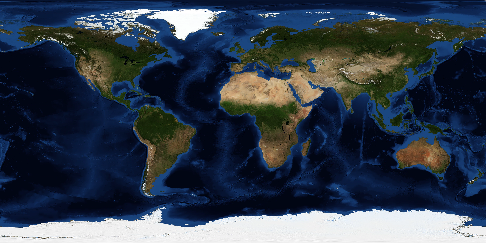
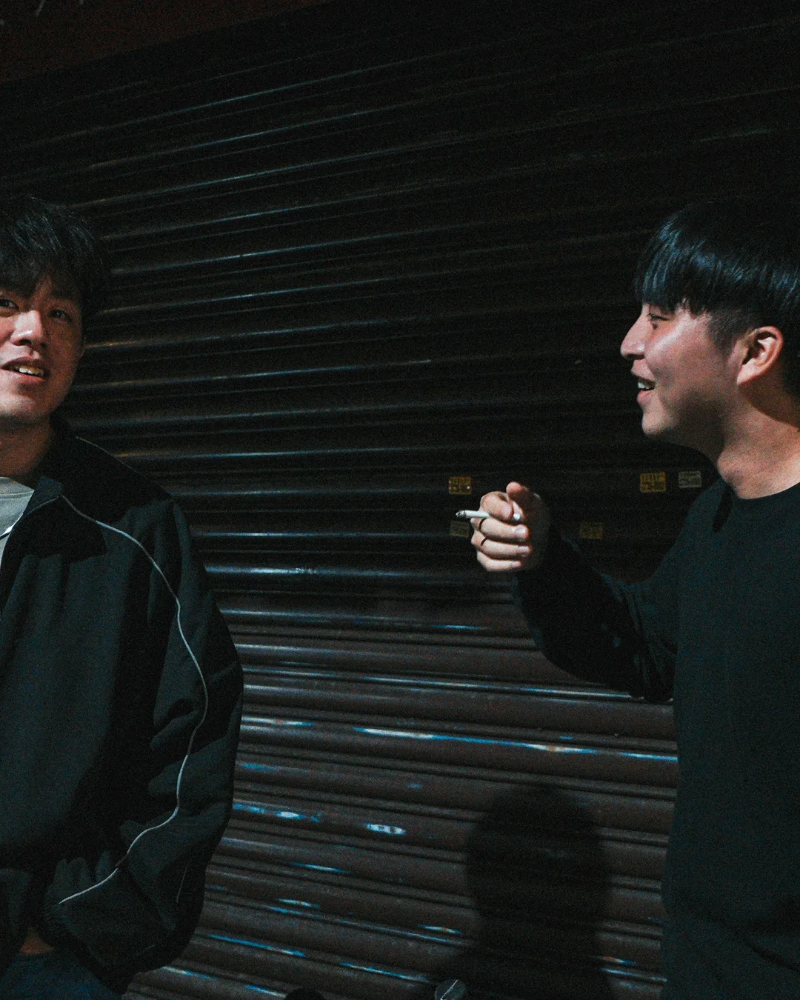

Skip to archive
Hank
Travel × Life
Travel
Life
Contact
01
Travel
02
Life
03
Contact

01 / 06
2023
Bali → Australia
Jul 26 — Aug 09
Open journey
↗
Bali to Australia, July to August 2023
01
Travel
Journeys.
←
01 / 07
Bali → Australia
Bali · Sydney · Uluru
→
Swipe

02 · Life
Toolmen.
Open Toolmen
↗